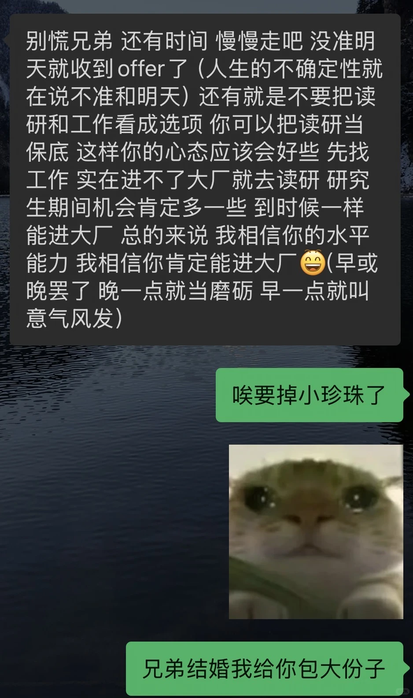
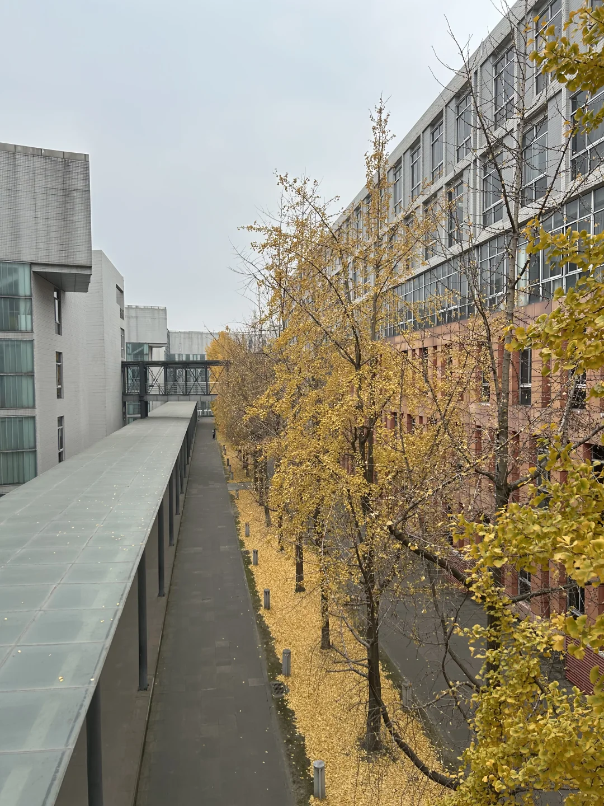
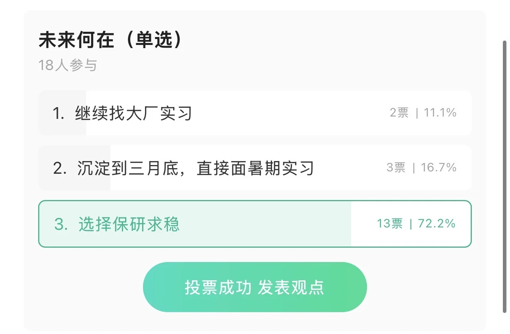

1 / 4
其實很久很久沒有失眠了..
求職受挫，離職半個月海投大廠一個約面都沒有，唯一約面的度子前一天打電話說項目上線不面了。以至於目前的狀態，不是自己努力所能改變的了，而是連機會都沒有，深深的無力感讓人只想逃離
這幾天嘗試focus自身，發現自己就是一個只會做貪心算法嘴硬頭鐵的啥福。回望這一年，是怎么走上这条路呢
明明年初還在寫大創的fastapi，過了年聽了好友的規勸，了解了互聯網行業畸形的現狀，跟幾個成功前輩聊了聊，就這樣頭鐵走上了java路。
我不知道自己失誤在哪，可能是暑期沒有找實習？可能是美團的場景題沒手撕出來？可能是九月沒有堅持到底面大廠？可能是沒有早點離職準備寒假實習？現實莫名其妙變得一團糟，崩潰…
開始重新審視自身，到底想要什麼呢。作為一個江浙孩子一直過著拮据自卑的生活，所以就報復性的追求高薪嗎？但下半年真真正正攢了那麼多錢，可以買自己一直很想買的數碼產品之後，我又猶豫了。反而在股市玩脫了二十個點。才發現自己不是想要錢，而是試圖去證明些什麼。
從小到大都是自己做決策：高中提前批，80個志願父母沒摻和一個，大一決心要轉專業到科班。在這個社會在這個耳濡目染的世界裡，讀研好似是必須的，長輩無一例外都想讓家族學歷最高的我繼續讀研。所以當我發現互聯網她真的不一樣，本科可以提前就業的時候，我很興奮。內心深處的反骨迫切的狂熱的想證明自己是獨立的，特立的，正確的。想證明自己不再是小孩，可以有一份體面賺錢的工作，可以有自己的生活。
晚上在nowcoder發帖問了熱衷就業的🐮u，出乎意料的是70%的人都勸我讀研。下午跟幾個掏心窩的朋友表達自己的崩潰，基本都在勸自己是時候把保底拿出來了。這讓我重新審視讀研，讀研好似變成了一種福分，能再給自己三年容錯，甚至可以換方向。
那事到如今，站在三叉路口：
拿一段小廠賭博暑期？上限釘死，不甘心…
保本校研？心底總還是有些對末九的芥蒂，不甘心…
保外校？浪費一年試錯就業，純rank不高，競賽少科研無，不甘心…
苦笑著發現，好像遇到了20年以來最大的試錯成本
其實又挺會安慰自己的，再怎麼說也是家族最高學歷，再怎麼說也是雙9碩，再怎麼說也不會找不到工作，再怎麼說也不是家裡窮到要我去頂住。
大半夜用文字吐點苦水，心裡好受多了，調整一下重心吧，現在還來得及。
很感謝給我建議的所有人，特別是我最好的前舍友：「晚一点就当磨砺 早一点就叫意气风发」